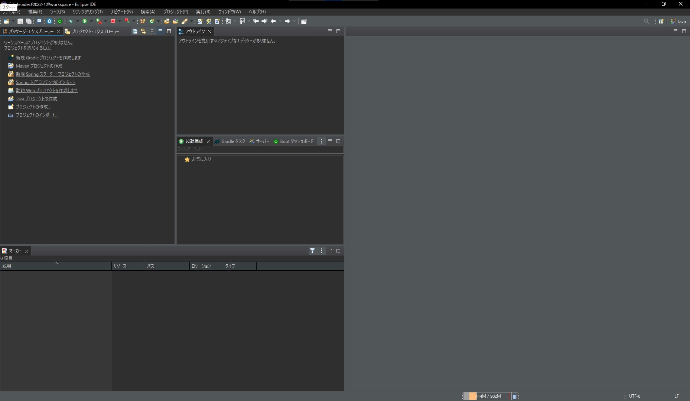

eclipseのセットアップ
eclipseを開発が始められるところまでセットアップしていきます。
保存先を変えていなければC:\pleiades\2022-12\eclipseにあるeclipse.exeを開きます。ファイルのパスは検索ボックスの隣にぶち込むところがあるのでコピペして入れちゃって大丈夫です。
起動中はこのような表示が出ます。
起動が終わると画像を撮り損ねましたがワークスペースの場所を聞かれます。もし、ファイルのパスが入力されていない状態になっていたら、C:\pleiades\2022-12にあるworkspaceを選択しておいてください。
ワークスペースを起動するとプロジェクトを編集する画面が出てきます。
情報量に圧倒されますが、まず左側のパッケージエクスプローラーにあるMavenプロジェクトの作成を選択するか、もしくは 上のメニューバーからファイルを選択し新規からMavenプロジェクトの作成でもできます。
そうすればこのような画面が出るはずです。次へをクリックしてください。
そうすればアーキタイプの選択に進みます。
- フィルターにmaven-archetype-quickstartと入力
- 一覧がぶわーっと出てくるのでグループidがorg.apach.maven.archetypesのものを探す
名前順になっているので中々深いところにある場合があります。

グループid名やアーティファクトid名が正しいのを確認し、クリックしてください。
出てくるボックスに次のテキストを正しく入力してください。アーティファクト名を変えても動かないことはないですが、私はこれで開発しているので最終手段のコピペができます。
- グループid=com.example
- アーティファクトID=demo
- バージョン=そのまま
- パッケージ=com.example.demo
パッケージは自動入力されるはずです。このまま完了をクリックしてください。しばらくコンソールがあらぶった後、
ここではこういう内容で作るけどおk?って聞かれているのでY::の先にYと入力してエンターを押してください。
そのあとしばらくほったらかすと緑色の文字でBUILD SUCCESSと出てくるはずです。
java20の追加
メニューバーのウインドウから設定を開いてください。
開けたらJavaのインストール済みのJREを開いてください。
ウインドウの右側にある追加を選択して、標準VMをクリックしてください。
- JREホーム=jdk-20フォルダを探す。変えてなければC:\Program Files\Java\jdk-20ここにあるはず
- JRE名=名前は変更できます。他のものと合わせてJava20と記載してもいいかと
右上に赤文字でエラーが書かれていなかったらそのまま完了
追加出来たら追加したjava20にチェックを打って画面下部の適用を押してから適用して閉じる
これでセットアップは完了です。これよりも大変な開発前の準備がまだ残ってますが。